30ste editie · 20 september 2026 · Jan Van Ruusbroecpark, Hoeilaart · Gratis toegang

Lineup
Info ▾
Bereikbaarheid
Meer dan muziek
Duurzaam
Extra
Fotografie & Pers
Vrijwilliger worden
Geschiedenis
Sponsors
30 jaar Nerorock
Geschiedenis
Vervang deze tekst door de historiek van Nerorock van de originele website.